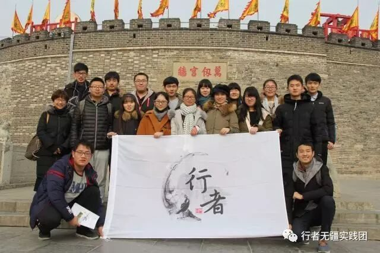

来自行者的第十六封信|体历文化，行者无疆
体历文化，行者无疆
文：王梓腾
读万卷书，行万里路。书中有其自成世界，一花一世界，一叶一菩提。当从济南站踏进山东这片故土后，心情惴惴，熟悉的方言，陌生的景色，那些飘散着些许古旧气息的文化从记忆中漫溯而上，我才真正明白，真正的文化有声有色，真正的亲身体历，才能别有一番风采。
团队的第一站落脚济南，泉城之名，果然不负。由于景点多，时间紧，团队分三组调研，各有专攻，而我们则小队先行趵突泉。冬日里，三股泉水汩汩而起，虽是淡季，人生依旧鼎沸，伴着泉声，人声，望着冬日里依旧生机勃勃跃起的三股湍水，我仿佛感受到当年乾隆游历时心情的豪爽，怪不得他不吝笔墨豪书“激湍”，怪不得他盛赞此泉天下第一，湍流不息，此泉当真不负。
泉城的文化融于泉城人的生活中。从趵突泉出来，正值中午，步行至大名鼎鼎的黑虎泉，泉城市民们依旧承载着千百年之前的习惯，在泉眼打水饮用。儿童嬉逐打闹，老人谈笑风生。千百年前的泉水还在汩汩流动，千百年来的人们依旧邻水而生，我想，这方是真正的泉城。
团队的第二站落脚泰安，下了火车，整顿完毕后，饥肠辘辘的我们首先便被山东经典小吃——杂粮煎饼吸引去了注意，制饼的大爷重复着早已化为潜意识的制饼动作，盈盈寸手之间，经典名吃现于眼前，至于其中风味，尝者自不待言。
泰安的文化主要集中在巍峨的泰山上。数千年来，不少文人雅士，风流人物顾盼其中，期待于山上留下自己的一方印记。回忆之前爬山的艰辛，山巅风景的壮美，壮阔的心情当真油然而生，香火鼎盛的泰山记载的是齐鲁最璀璨的那一笔文化。团队行至此地，天色已晚，行至红门便归，然杜工部“会当凌绝顶，一览众山小”的气概却已在胸中浩然而起，这是山东人引以为傲的精神支柱，它是五岳之首，坐镇这漫漫的华北平原。
团队的第三站落脚曲阜，儒道尚功利，文人自风雅。这一霸占两千年封建文化儒家学派便是诞生于此，孔府中碑殿的建筑的勾引斗角与大殿的豪放端庄矛盾又融洽的融为一体，就像儒学，承旧而革新。万仞宫墙曾经一度成为文化前行的壁障，然而在新时代又发挥着它的熠熠光彩。或许这便是儒，厚重，端庄。


行者无疆山东此行告一段落，但是它还会在其他省份再次出发，行者，一直在路上……